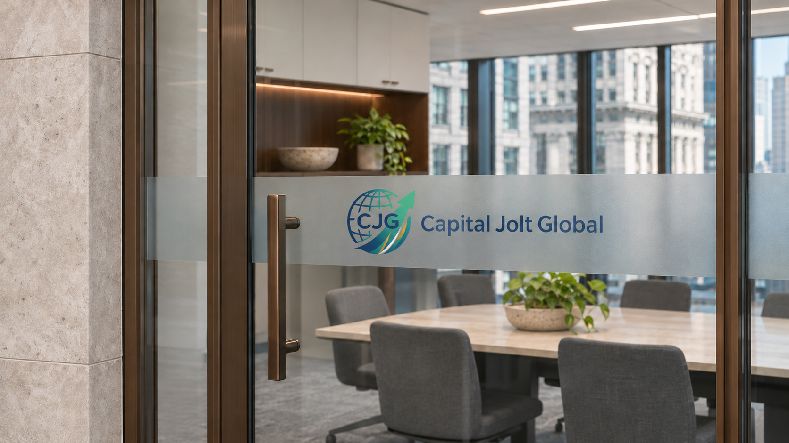

開啟下一次對話
每一個有價值的連結，
都從對話開始。
歡迎了解 Capital Jolt Global 的企業研究、專業交流與合作方向。聯絡管道與社群資訊將於正式連結確認後更新。
聯絡 Capital Jolt Global
與 CJG 建立連結。
企業合作、研究交流或網站內容問題，都可以先整理你的需求。以下保留官方網站、電子郵件與社群的位置，正式管道確認後將統一更新。
官方網站官方網站連結待更新 ↗
電子郵件電子郵件聯絡待更新 ↗
官網、信箱與社群連結尚待更新。點擊待更新項目可查看目前狀態。
整理你的交流需求
先整理想交流的內容。
你可以在此整理並複製聯絡內容。正式管道開放前，這份表單不會寄送或儲存你的資料。
在社群延續對話
在更多地方，
延續專業的對話。
以下為預留的官方社群位置。正式網址確認前，不會導向同名或未經確認的帳號。
